Lab 3
Contents
clear all; close all; clc;
Spatial Frequencies 1
Loading in and Resizing the images
bricks = imread('bricks.jpg'); sky = imread('sky.jpg'); bricks_256 = imresize(bricks, [256 256]); sky_256 = imresize(sky, [256 256]);
Displaying the Fourier Transform of the bricks and the sky
figure; imshow(bricks_256) bricks_gray = rgb2gray(bricks_256); title('Sky Image') figure; imagesc(log(abs(fftshift(fft2(bricks_gray))))) title('FFT of bricks') figure; imshow(sky_256) sky_gray = rgb2gray(sky_256); title('Sky image') figure; imagesc(log(abs(fftshift(fft2(sky_gray))))) title('FFT of sky')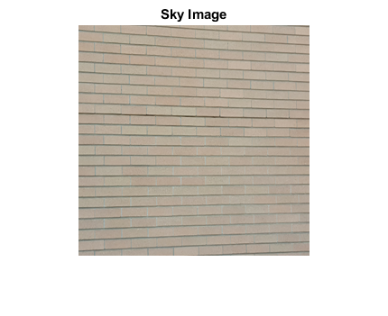


Applying a low pass filter to the bricks yields the following
lpf = fspecial('gaussian',5,1.7); hpf = [0 0 0 0 0; 0 0 0 0 0; 0 0 1 0 0; 0 0 0 0 0; 0 0 0 0 0] - lpf; bricks_lpf = imfilter(bricks_gray, lpf, 'replicate'); bricks_hpf = imfilter(bricks_gray, hpf, 'replicate'); figure; imshow(uint8(bricks_lpf)) title('Bricks after LPF'); figure; imagesc(log(abs(fftshift(fft2(bricks_lpf))))) title('Magnitude of the bricks after LPF'); figure; imagesc(angle(fftshift(fft2(bricks_lpf)))) title('Phase of the bricks after LPF'); figure; imshow(uint8(bricks_hpf)) title('Bricks after HPF'); figure; imagesc(log(abs(fftshift(fft2(bricks_hpf))))) title('Magnitude of the bricks after HPF'); figure; imagesc(angle(fftshift(fft2(bricks_hpf)))) title('Phase of the bricks after HPF');
 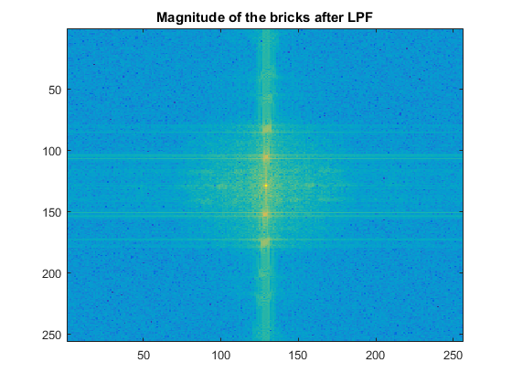 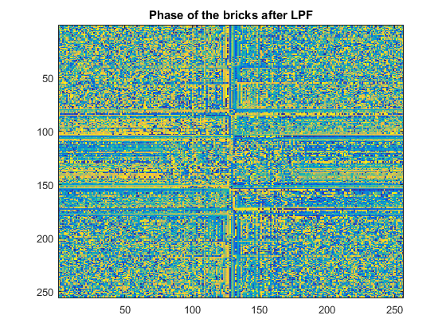 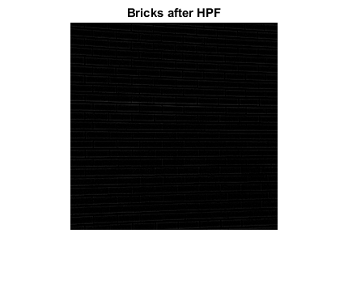 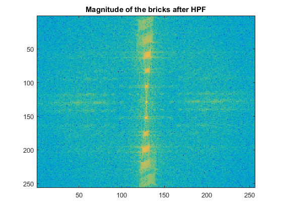
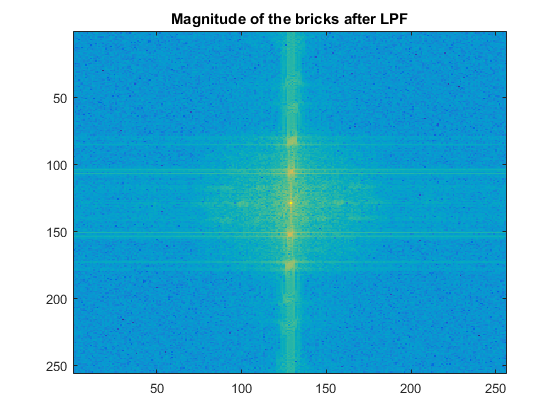 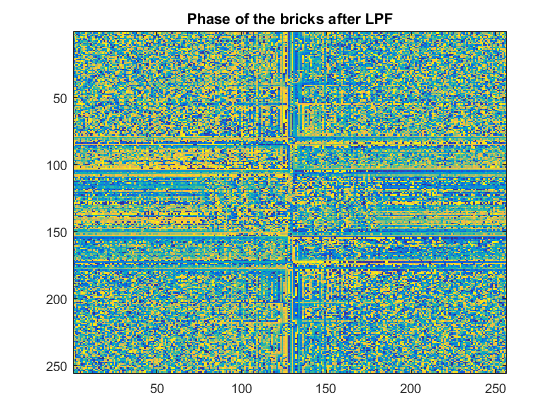 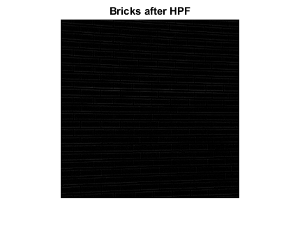 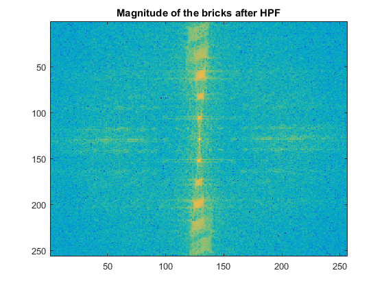 
The energy for the high pass and low pass are given by:
energy_lpf = norm(fft2(bricks_lpf),2);
energy_hpf = norm(fft2(bricks_hpf),2);
fprintf('Bricks Energy HPF = %d, LPF Energy = %d\n', energy_hpf, energy_lpf);
Bricks Energy HPF = 2.691808e+05, LPF Energy = 1.083897e+07
Doing the same to the sky image yields the following:
sky_lpf = imfilter(sky_gray, lpf, 'replicate'); sky_hpf = imfilter(sky_gray, hpf, 'replicate'); figure; imshow(uint8(sky_lpf)) title('Sky after LPF'); figure; imagesc(log(abs(fftshift(fft2(sky_lpf))))) title('Magnitude of the sky after LPF'); figure; imagesc(angle(fftshift(fft2(sky_lpf)))) title('Phase of the sky after LPF'); figure; imshow(uint8(sky_hpf)) title('Sky after HPF'); figure; imagesc(log(abs(fftshift(fft2(sky_hpf))))) title('Magnitude of the sky after HPF'); figure; imagesc(angle(fftshift(fft2(sky_hpf)))) title('Phase of the sky after HPF');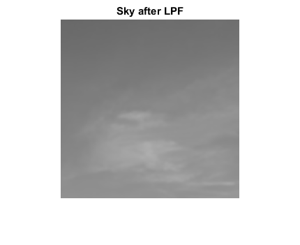


The energy for the high pass and low pass are given by:
energy_lpf = norm(fft2(sky_lpf),2);
energy_hpf = norm(fft2(sky_hpf),2);
fprintf('Sky Energy HPF = %d, LPF Energy = %d\n', energy_hpf, energy_lpf);
Sky Energy HPF = 1.646941e+04, LPF Energy = 8.817600e+06
Adding in some singals to the FFT yields the following:
sky_fft = fftshift(fft2(sky_gray)); figure; imagesc(log(abs(sky_fft))); title('FFT before adding signal'); amt_to_add = 10e5; sky_fft(128+64,128+64) = amt_to_add; sky_fft(128-64,128-64) = amt_to_add; sky_fft(128-64,128+64) = amt_to_add; sky_fft(128+64,128-64) = amt_to_add; sky_fft(128,128+64) = amt_to_add; sky_fft(128,128-64) = amt_to_add; sky_fft(128+64,128) = amt_to_add; sky_fft(128-64,128) = amt_to_add; figure; imagesc(log(abs(sky_fft))); title('FFT after adding signal'); sky_fft_modified = ifftshift(sky_fft); sky_gray_modfied = uint8(ifft2(sky_fft_modified)); figure; imshow(sky_gray_modfied); title('Image after adding signal');
Warning: Displaying real part of complex input.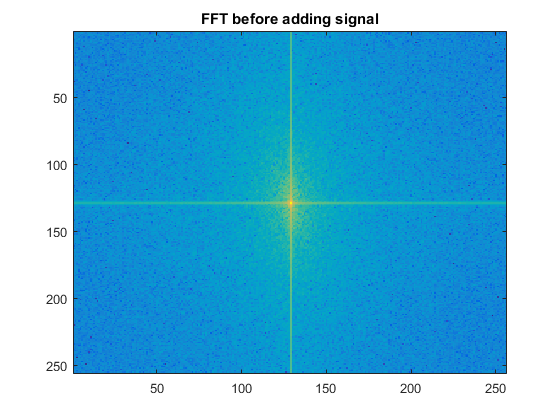 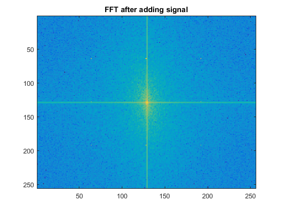
Removing the signal
sky_fft(128+64,128+64) = 0; sky_fft(128-64,128-64) = 0; sky_fft(128-64,128+64) = 0; sky_fft(128+64,128-64) = 0; sky_fft(128,128+64) = 0; sky_fft(128,128-64) = 0; sky_fft(128+64,128) = 0; sky_fft(128-64,128) = 0; figure; imagesc(log(abs(sky_fft))); title('FFT after removing signal'); sky_fft_modified = ifftshift(sky_fft); sky_gray_modfied = uint8(ifft2(sky_fft_modified)); figure; imshow(sky_gray_modfied); title('Image after Removing signal');
Spatial Frequencies 2
Load in the images
g_img = imread('G.jpg'); b_img = imread('B.jpg'); g_256 = imresize(g_img, [256 256]); b_256 = imresize(b_img, [256 256]); g_gray = rgb2gray(g_256); g_gray = imrotate(g_gray, 90); b_gray = rgb2gray(b_256); g_fft = fft2(g_gray); b_fft = fft2(b_gray); figure; imshow(g_gray); title('G Image'); figure; imagesc(log(abs(fftshift(g_fft)))); title('FFT of G Image'); figure; imshow(b_gray); title('B Image'); figure; imagesc(log(abs(fftshift(b_fft)))); title('FFT of B Image');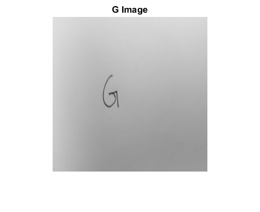
Sharpening the image with unsharp
g_unsharp = imsharpen(g_gray); b_unsharp = imsharpen(b_gray); figure; imshow(g_unsharp); title('G with unsharp'); figure; imshow(b_unsharp); title('B with unsharp');
Sharpening the images with high boost
[J0, J1] = Highboost(g_gray, 1.5); figure; imshow(J0); title('G with highboost - J0'); figure; imshow(J1); title('G with highboost - J1'); [J0, J1] = Highboost(b_gray, 1.5); figure; imshow(J0); title('B with highboost - J0'); figure; imshow(J1); title('B with highboost - J1');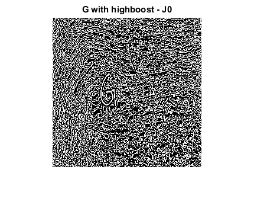 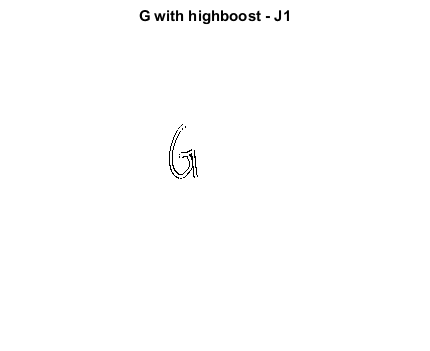 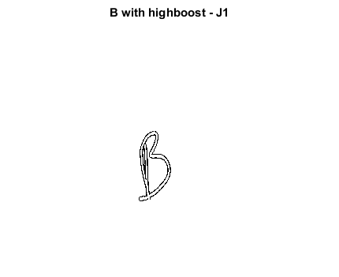
Swapping the phase of the two images.
g_mag = abs(g_fft); b_mag = abs(b_fft); g_phase = angle(g_fft); b_phase = angle(b_fft); swapped1 = g_mag .* exp(1i*b_phase); swapped2 = b_mag .* exp(1i*g_phase); s1_img = uint8(ifft2(swapped1)); s2_img = uint8(ifft2(swapped2)); figure; imshow(s1_img); title('G Magnitude with B phase'); figure; imshow(s2_img); title('B Magnitude with G phase');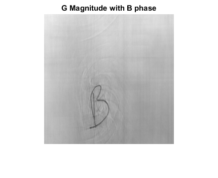
More Fun with Frequencies
gogol = imread('fg2.jpg'); %gogol = imcrop(gogol, [194 290 333 538]); gogol = imcrop(gogol, [194 290 139 248]); gogol = imresize(gogol, [256 256]); jesse = imread('Jesse.jpg'); %jesse = imcrop(jesse, [163 177 260 351]); jesse = imcrop(jesse, [163 177 97 174]); jesse = imresize(jesse, [256 256]); fixedPt = [82 118; 172 120]; movingPt = [90 128; 176 139]; tform = fitgeotrans(movingPt,fixedPt,'NonreflectiveSimilarity'); Jregistered = imwarp(jesse,tform,'OutputView',imref2d(size(gogol))); figure; imshowpair(gogol,Jregistered) title('Images of Jesse and Me after being reg'); lpf = fspecial('gaussian',5,10); hpf = [0 0 0 0 0; 0 0 0 0 0; 0 0 1 0 0; 0 0 0 0 0; 0 0 0 0 0] - lpf; gogol_lpf = imfilter(double(gogol), lpf, 'replicate'); Jregistered_hpf = imfilter(double(Jregistered), hpf, 'replicate'); figure; imshow(uint8(gogol_lpf + 15*Jregistered_hpf)); title('High freq of Jesse and Low freq of Gogol');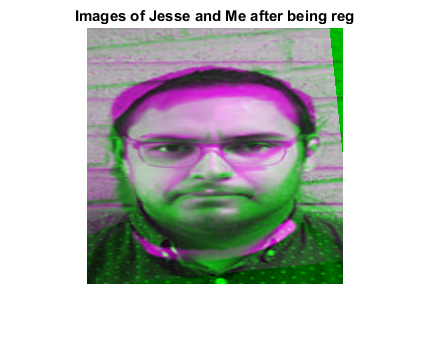

Geometric Transforms
Rotation a mesh
theta=-30;
theta=deg2rad(theta);
R = [cos(theta) -sin(theta);
sin(theta) cos(theta)];
[x,y] = meshgrid(1:64);
C = 0.*(x + y);
rot_x = zeros(64,64);
rot_y = zeros(64,64);
for i = 1:1:length(x)
for j = 1:1:length(y)
temp = R*[x(i,j);y(i,j)];
rot_x(i,j) = temp(1);
rot_y(i,j) = temp(2);
end
end
figure;
surf(x,y,C);
hold on
surf(rot_x,rot_y,C);
hold off
view(-90,-90)
Now do it for the image
gogol_g = rgb2gray(gogol); [x,y] = meshgrid(1:256); [u,v] = meshgrid(1:256); rot_u = zeros(256,256); rot_v = zeros(256,256); for i = 1:1:length(u) for j = 1:1:length(v) temp = R*[u(i,j);v(i,j)]; rot_u(i,j) = temp(1); rot_v(i,j) = temp(2); end end rot_gogol = interp2(u,v, im2double(gogol_g), rot_u, rot_v, 'cubic'); figure; imshow(rot_gogol);